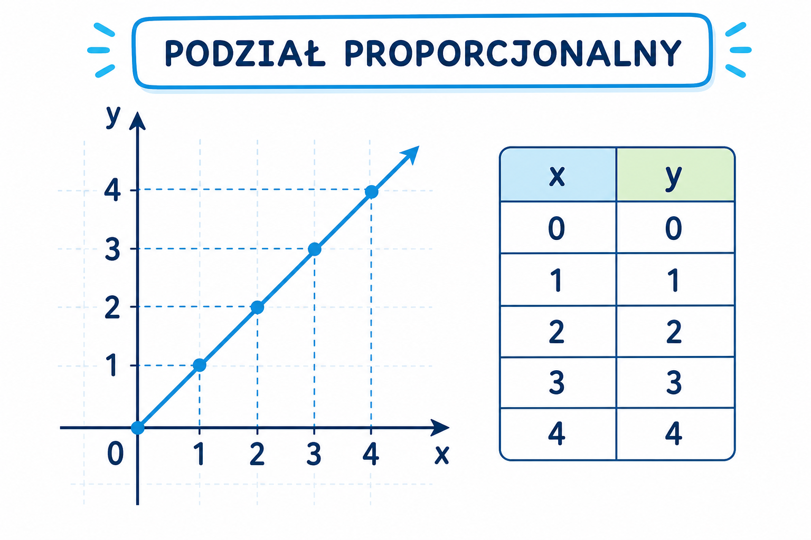

1
podział proporcjonalny
пропорційний поділ

📘 Co to jest? Що це?
Całość dzielimy na części proporcjonalne do podanych liczb.
Ціле ділимо на частини, пропорційні даним числам.
⭐ Zapamiętaj Запам'ятай
w stosunku m:n
Сума ваг = m+n. Одна частина = ціле : сума ваг.
⚠ Nie pomyl Не плутай
- podział proporcjonalny = coś innegoCałość dzielimy na części proporcjonalne do poda
- Mylę podział proporcjonalnySprawdź definicję: podział proporcjonalny
✅ Przykłady Приклади
- 60 zł w st. 2:3
- 24: 2 cz. + 3 cz.
- podziel wg stosunku
- 100 w 1:4 → 20 i 80
- suma części = całość